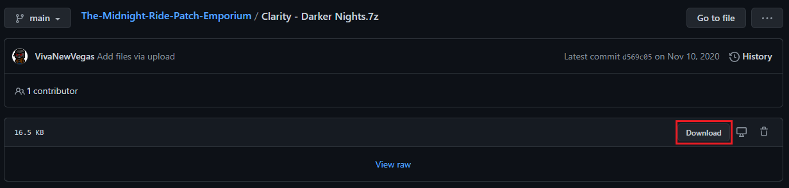

If there are less visual mods in this guide than you were expecting/hoping, read the paragraph at the bottom of the
Included Mods section from the Introduction page for why that is.
- Right-click anywhere in the left pane of MO2 and select All Mods -> Create Separator
- Name the separator Visuals
Installation instructions:
- Main File - Institute and standard lasers 1.4
- Makes the laser weapons take up less of the first person camera
Installation instructions:
- Main File - RobCo Recon Scope Replacer 1.03
- Replaces the recon scope with a sleaker and less obtrusive design
Installation instructions:
- Main File - No Holotape Tease - Texture Replacement
- Changes the color of some debris textures to prevent them from looking like holotapes
Installation instructions:
- Download and install the Main File - Clarity 4.3 BETA normally through MO2
- Once the mod has been installed, double-click it in the left pane of MO2
- In the INI Files tab, select Clarity.ini
- Add a ; (semi-colon) in-front of sStartingConsoleCommand=cl rim .002; (line 2)
- Ctrl+S to save the changes and then exit
This change comments out code that would overwrite the .BAT file that was installed in the INI Tweaks step
- Removes and fixes many vision-obscuring effects
Installation instructions:
- Download the mod using the download button pictured below
- Finish the install normally through MO2

- Slightly darkens nights while still keeping Clarity's enhancements
Installation instructions:
- Main File - Interiors Enhanced 2.0 - ALL IN ONE 2.0
- Makes interiors darker and more atmospheric, without adding more shadows/causing FPS drops
Installation instructions:
- Main File - No More Glowing Mouths 1.0
- Prevents mouths from glowing in dark lighting